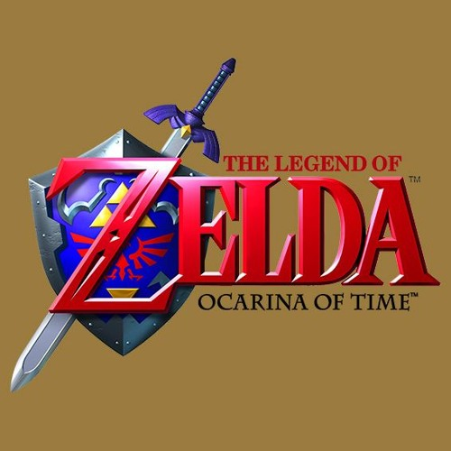

The Legend of Zelda: Ocarina of Time
Description
Widely hailed as one of the greatest video games of all time, Ocarina of Time set a new standard for 3D adventure gaming. Released for the Nintendo 64 in 1998, this iconic title follows young Link as he travels through time, explores vast dungeons, and battles the evil Ganondorf to save the land of Hyrule. With its groundbreaking lock-on targeting system, immersive world-building, and unforgettable soundtrack, Ocarina of Time isn't just a game—it's a legend in its own right.
Did you know?
Players could switch between child and adult Link, changing the world and puzzle outcomes. And lock-on targeting was a brand-new feature.